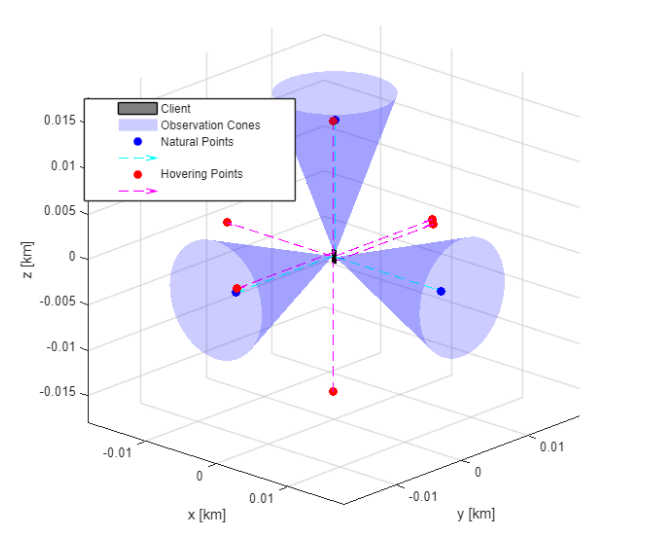
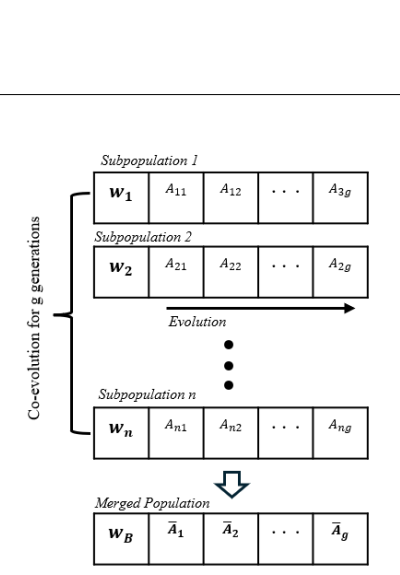
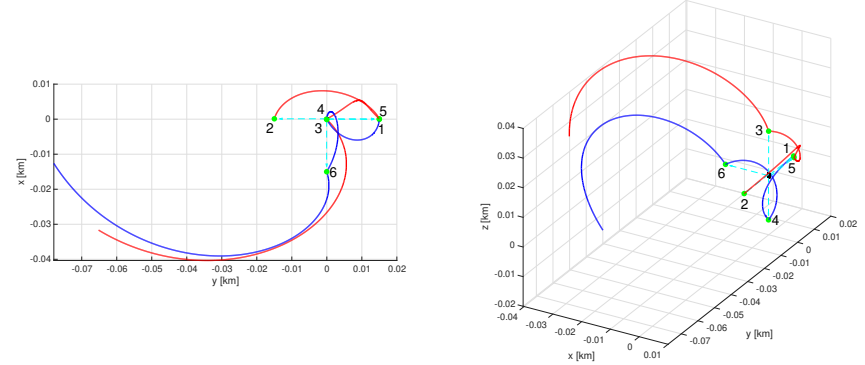
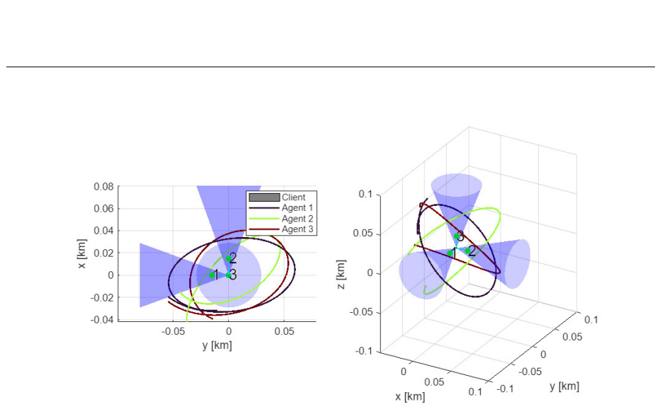

Planning a spacecraft inspection mission.
Optimal Coordinated Space-Based Swarm Operations Using a Co-evolution Strategy in a Genetic Algorithm
THE PROBLEM
The inspection problem.
A rotating spacecraft presents changing surfaces to an inspecting swarm. Some areas can be observed from passive relative orbits; others need a spacecraft to hold position near the target. The mission must cover all assigned points while conserving fuel and keeping the vehicles safely separated and connected.
For my 2026 master’s thesis, advised by Dr. Eric A. Butcher at the University of Arizona, I developed an optimization method that plans natural relative orbits and controlled hovering tasks together.
Relative motion
Use Hill–Clohessy–Wiltshire dynamics to describe passive and faster-than-natural trajectories near the target.
Body-fixed hovering
Track high-priority points on the tumbling client with a saturated PID-style controller and anti-windup compensation.
Co-evolve the plan
Search orbit assignments, active agents, hovering visits, and departure delays while evolving constraint penalty weights.
FROM THE THESIS
Figures from the thesis.
Original figures from the thesis, with simplified captions for the web.




EXAMPLE RESULT
Example solution.
Example from Thesis Chapter 4, Tables 4.10–4.14. These are simulation results, not a flight performance claim.
WHAT THE RESULT MEANS
Results and limits.
The algorithm minimizes a blend of average and maximum fuel-budget use, with hard collision constraints and penalties for missed coverage or broken connectivity. In the worked example, it selected three passive-orbit agents and two hovering agents. The hovering trajectories used more fuel because they required continuous control; passive trajectories used impulsive transfers.
This is an optimization framework tested in simulation. The thesis describes its solutions as competitive feasible candidates, rather than provable global minima, and identifies population diversity and selection pressure as areas for further study.
Publication link will be added when a public record is available.
DISCUSS THE WORK
Questions about this work?
Email me about the methods, results, or related research.